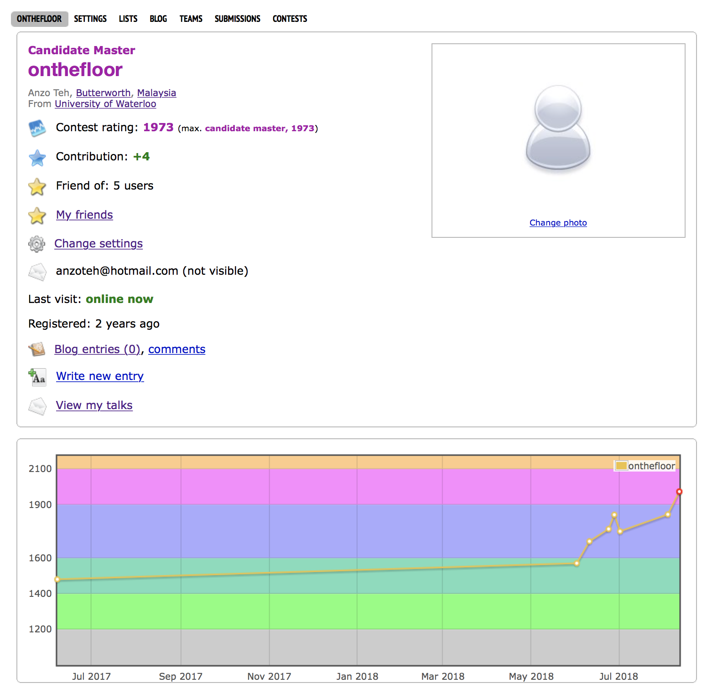

I started coding in Feburary 2016, mainly to solve algorithmic problems appeared in various contests.
My primary language is C++ (although I started picking up Python 2 recently for Datathon purposes).
The collection of cool problems I have solved can be found here.
My Leetcode contest progress as of February, 2018.

My Codeforces contest progress as of June, 2018.
Some of the awards I have won on the online or physical programming platforms are:
USACO February 2018 Gold Division: Promoted to Platinum Division.
Communitech Code-and-Win Competition, January 2018:
Final Round: Rank 15/46, score 428/450.
Preliminary Round: score 284/375 (threshold to advance: 185 points).
HackerRank Week of Code 32: Gold medal (ranked 174/8433)
Promoted to O(1) rating category (top 1% among all users)
HackerRank Week of Code 24: Gold medal (ranked 189/9133)
LeetCode Weekly Contests:
Contest 70: ranked 29/2555.
Contest 45: ranked 38/2292.
Contest 43: ranked 78/2291.
Contest 41: ranked 99/2174.
Contest 34: ranked 26/1557.
USACO December 2016: Perfect Score (Bronze and Silver Divisions)
Promoted to Gold Division
It's worth noting that my ability to code has also won and team and me the second place at the Waterloo Google Games on April 28, 2018, during which I nailed down 5 algorithmic- (and math-) puzzles for my team, resulting in us solving 11 puzzles in total!
Hackathon Experience
LifeLog, the first UOttaHacks
Date: February 17-18. 2018
On GitHub, developers can showcase their progress by commiting changes of their own files. Yet sometimes they prefer spending time to enrich themselves through reading articles related to their ongoing side projects, or merely for interest. Hence, it might be misleading for people to think that they do not contribute much, and are therefore non-productive during the period.
We developed a web application so that developers (or any users) can 'commit' their readings onto LifeLog. To be precise:
People can commit an article they find interesting onto LifeLog.
People can also highlight phrases they find interesting onto LifeLog.
My contribution to this application is the Chrome extension framework. To be precise, I started off by writing the manifest.js file (that is needed for most Chrome extension), before developing the main.js file by adding the chrome.addListener function: this allows the Chrome extension to send the commit to console log whenever a new article has been 'commited'.
Trading Simulator, Royal Bank of Canada(RBC)'s The Next Great Innovator Hackathon
Date: September 23-24, 2017
My team agreed on building a Trading Simulator that opens to everyone to compete against RBC's trading strategy for the following two objectives:
To attract top performers into working in RBC and improve RBC's trading strategies.
To improve the trading stragies of RBC through 'learning' from the top performers.
Our team comprised a Business Analyst, a UI Designer, and three developers (me included).
In simulating the way in which an individual attempts to beat RBC by guessing the stock price at the next minute, a teammates posed me this question:
how do you predict the stock price at the next minute given the prices in the past?
After some comptemplation I noticed the similarity of this question to the classical problem of finding the next number in a sequence,
which immediately prompted me to use the Lagrange Interpolation Polynomial to fit every point into a single polynomial.
The problems associated to this formula are:
Inefficient running time due to the need of recalculation of the data for every single computation.
Integer overflowing (even in Python) due to the multiplication of large number (say, hundreds or thousands) of variables.
Huge deviation of the next predicted number from the numbers in the original sequence (due to the high power of the leading coefficient) that renders the prediction inaccurate.
I later learned that this problem is named overfitting.
In view of this I attempted the linear regression method: the results were getting better, but not quite there.
Nonetheless, this motivated the approach of fitting a polynomial with degree depending on the number of points we had in the past.
This was achieved by fitting the numbers into matrices in computing the coefficients of the resultant polynomial using numpy.linalg package.
It's then found that an optimal way (using this approach and given the dataset) was to set the degree of polynomial at $O(\sqrt[3]{n})$ where $n$ is the number of points.
This effectively capped my error at 4% in price prediction (around 1.5% on average).
A snippet of my Python code written for the regression calculation by storing the values of $\sum x^k$ and $\sum yx^m$.
Some other tasks I did during the Hackathon was to help debugging codes written by my teammates in Javascript, HTML and CSS (towards the deadline of the submission).
Skills gained: a preliminary idea on how machine learning works.
Idea Connector, Waterloo Equithon
May 5-7, 2017
This was my first Hackathon experience.
The problem that my teammates and I worked on was the fact that there were people with ideas and insights but do not have the skills to implement them.
On the other hand, there were also people with advanced skills in their related fields yet do not have the insights to see which problems to solve.
Hence we developed a website to connected the two types of people.
Languages: HTML, CSS, Javascript.
Benefit gained: a motivation to develop my own website here.
Datathon Experience: Waterloo Datathon 2017
On May 13, 2017, I was selected to take part in the Waterloo Datathon (through an assessment).
The task given on the day was to draw conclusion based on the data on pickups by Uber and other transportation method in different areas.
My teammates and I decided to relate this data to the crime rate happening in the respective cities (using another dataset we searched on our own).
Using statisical languages like R and Python, we drew a conclusion that public transportation is less perferred in areas with high crime rates.
Inspired by the cyrptography research that I am undertaking in Summer 2018, I couldn't help but wonder: how to implement a system of numbers modulo n that provides a convenient method for addition, subtraction, multiplication and even integer division (inverse)? More generally, how can I implement features in C++ that offers cool mathematical things like what SageMath.org offers? Below are the framework I needed to do:
The BigInt system in C++.
The int type in C++ allows 32-bits of integer storage while the long long int type allows 64-bits. In order for a sagemath simulating system to be efficient, we must have a system that stores way beyond the prescribed 64 bits for integers. The features currently supported are as of below:
Basic arithmetic (addition, subtraction, multiplication, integer division and remainder).
Comparison (greater or less than, equality).
Bitwise shift (left shift << and right shift >>).
Number modulo n.
The arithmetic operations are the same as the BigInt system, but there are a few differences:
Ordering and comparison no longer makes sense here.
Division of integers can still return an integer without remainder provided that the divisor is relatively prime to n (for example, if n = 11 then 1/5=6).
Fast exponentiation can be done, i.e. the result of $k^m$ mod n can be found in polynomial time in log k, m and n.
Research Experience
As mentioned in my home page, I just finished doing a research on finding weakly connected components in a graph.
The task of finding a weakly connected component can be rephrased as below:
Given a group of people, some pairs of them are friends (and friendship is mutual).
For each pair of people A and B, do there exist a set of people from the group,
such that we can line them up with A on one end and B on the other end, and any two neighbouring people on the line are friends?
Although various algorithms exist (breadth-first search, depth-first search, quick-find, quick-union),
most (if not all) of them cannot update the set of connected components efficiently in the case of edge deletion.
A crucial observation in solving this mega-problem is that, in general, the probability of a connected component being split into two upon edge deletion is rather small.
Having this in mind, and having familiarized myself with the existing algorithms in a static setting, I started off by modifying the features of the existing algorithms:
Breadth-first search: record the distance of each vertex from a selected vertex of its component. Deletion of an edge joining vertices of the same distance does not change the connected components.
Quick-union: select some edges that will form a forest (that is, collection of trees). Deletion of edge that do not form a forest won't change the connected components.
As compared to the naive algorithm of repeating the same algorithm (used for static setting), these algorithms managed to reduce the running time by 5000 times.
The final part of my research concerns about making these algorithms work in parallel processing (that is, multitasking).
After designing the algorithm on paper, I explored two technologies: OpenMP and Message Passing Interface (MPI).
Under the advice of my supervisor, I chose to move on with MPI due to the private memory assigned to each processor (which makes it easier to scale to big numbers).
In the end of my research, I constructed a framework of the algorithms aforementioned that conatains the idea behind it.
Dataset used: 5 graphs with up to 105 million vertices and up to 2.6 billion edges.